Even frontier LLMs fall short.
With the same evidence context, strong LLMs still fail to reliably reconstruct complex events as structured Event-Process Graphs.
An evidence-traceable benchmark for event-process reconstruction.
H²EPR-Bench evaluates real-world event understanding across summarization, event-process reconstruction, prediction, and simulation from fixed evidence contexts.
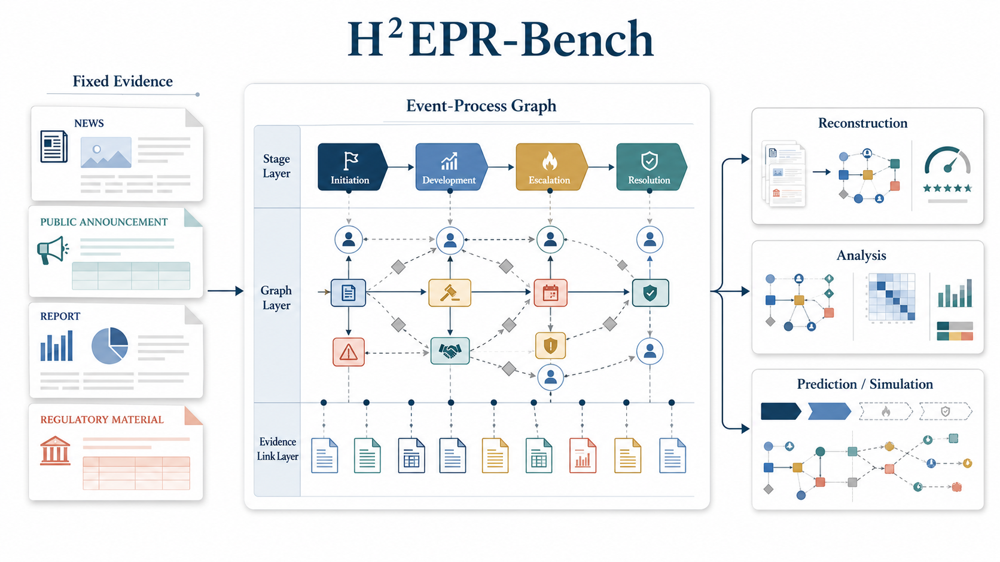
With the same evidence context, strong LLMs still fail to reliably reconstruct complex events as structured Event-Process Graphs.
LLMs may gather the right facts and write fluent accounts, yet fail to infer the temporal and causal logic that makes an event coherent.
Models mention facts, but lose stage order, actor actions, and action-result logic across long event sources.
H²EPR-Bench turns scattered evidence into staged event graphs for analysis, prediction, and market/social simulation.
Real-world events are not static text objects. They unfold through stages, actors, actions, dependencies, outcomes, and evidence distributed across sources. Evaluating whether a model understands such events therefore requires more than summaries, timelines, or isolated extraction targets.
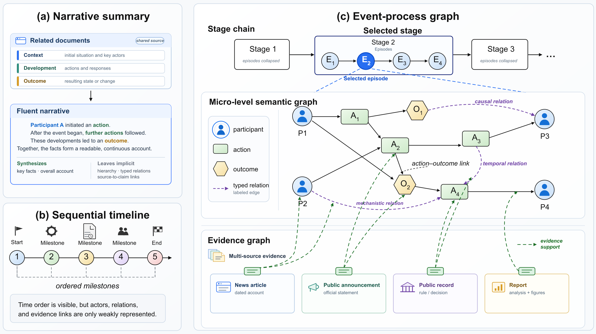
Event-process graphs keep stage order, actor interactions, operations, relations, and evidence links visible in the same representation.
This turns event understanding into a structured reconstruction problem rather than a single text-generation target.
H²EPR-Bench treats events as structured process objects. Starting from fixed evidence contexts, each event is represented as a hierarchical heterogeneous Event-Process Graph that makes stage progression, actor interactions, temporal dependencies, action-result logic, and evidence links explicit.
This representation makes the benchmark useful beyond leaderboard scoring. It can evaluate event-process reconstruction, support analysis of recurring event patterns, and provide structured event substrates for prediction and simulation settings, such as masking future stages, continuing partially observed events, or connecting multiple events into larger market or social-process scenarios.
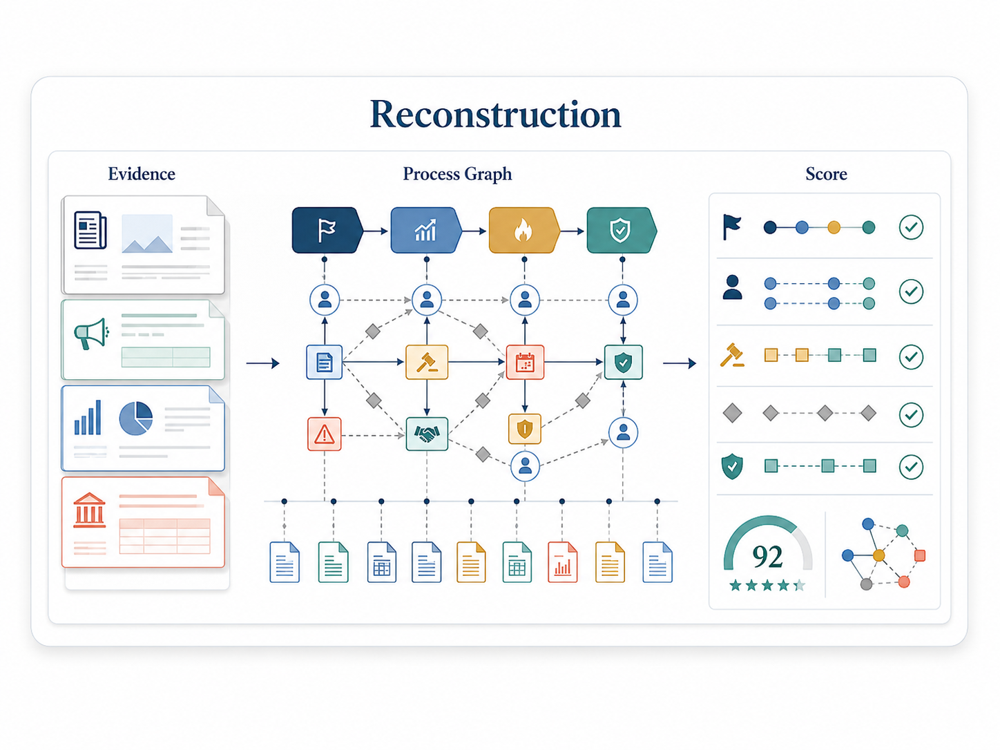
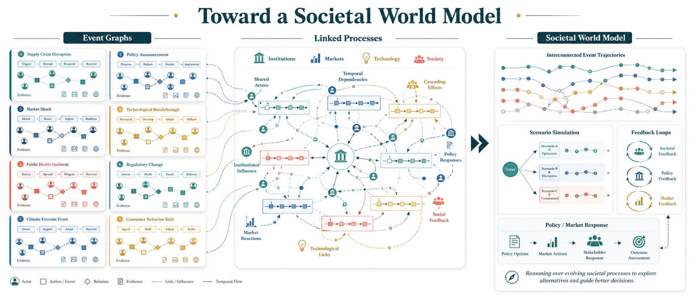
Each system receives an event descriptor and a fixed public evidence context, then returns a structured Event-Process Graph.
Official scores are computed against gated Gold references. Public artifacts support browsing, presentation, and reuse.
The target representation covers macro stages, stage-internal structure, participants, actions, relations, temporal anchors, and evidence links.
Evaluation compares structural fidelity, temporal consistency, action-result logic, and evidence traceability.
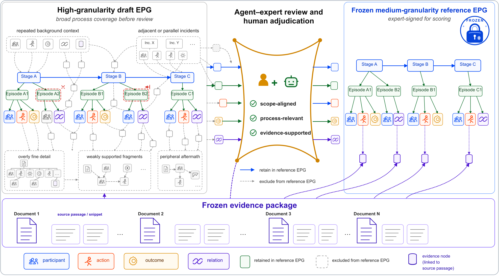
The public repository is designed for browsing, reuse, and inspection. Official benchmark scoring is tied to the gated Gold references, so release artifacts remain useful without exposing answer keys in the open dataset.
Unified-3000 covers 3,000 events from 1629 to 2025 across six domains and twenty-six categories. Its frozen evidence packages retain 25,814 verified documents from 84,693 candidate source records, with public artifacts aligned by canonical event IDs.
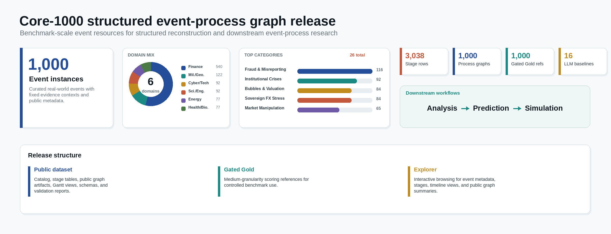
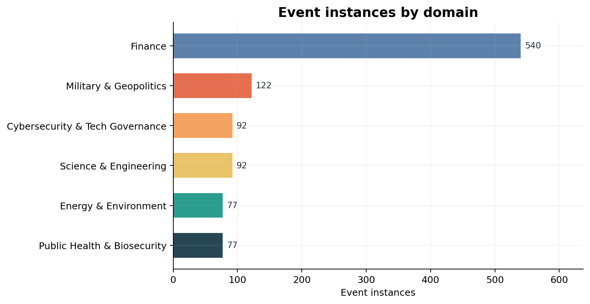
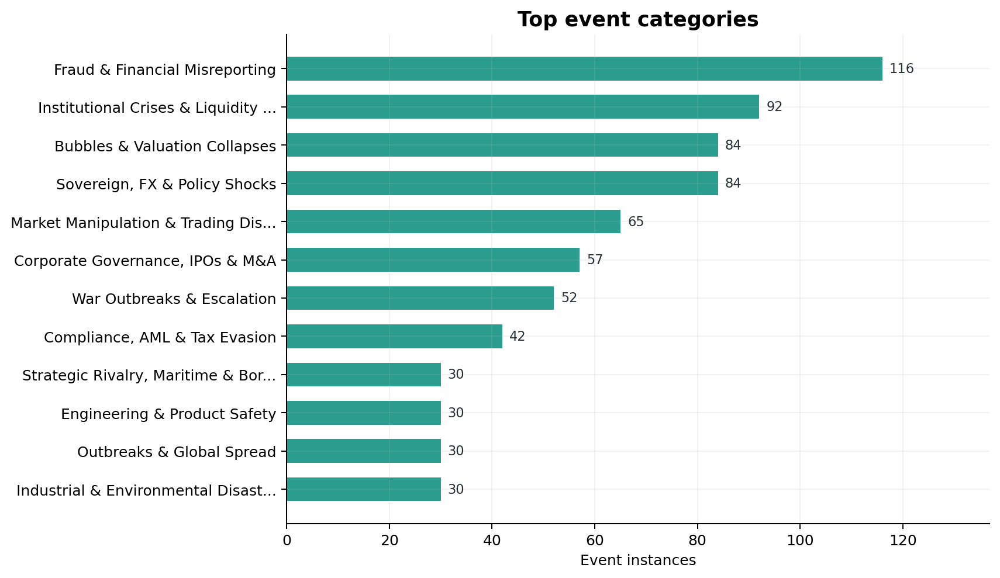
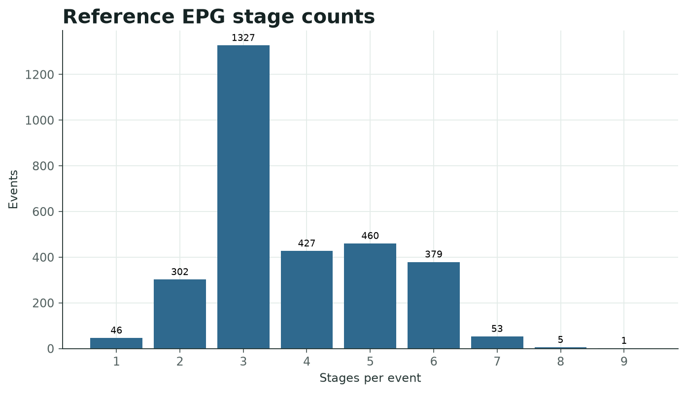
The Explorer is the browsing layer for event metadata, stage tables, timeline views, and public graph summaries.
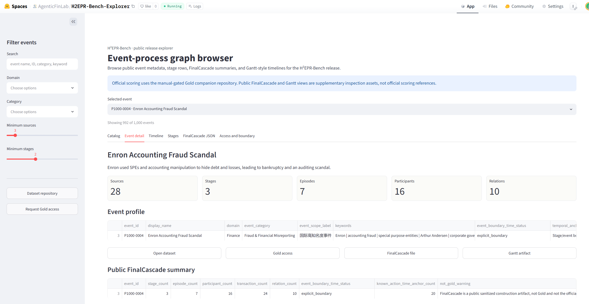
FinMycelium draft-EPG timelines from the Unified-3000 event collection.
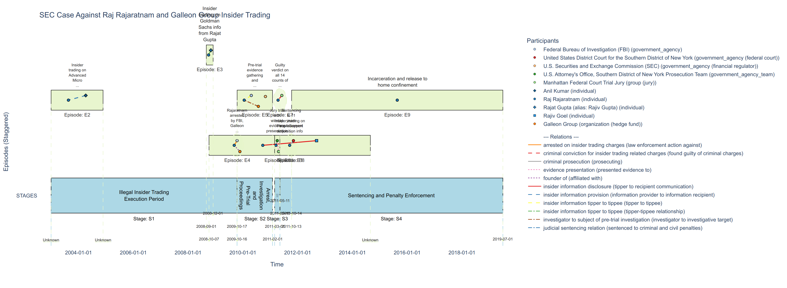
Direct reconstruction results expose a consistent gap between evidence retention and structured event-process recovery.
Each system receives the same event descriptor and evidence context.
The model returns a hierarchical heterogeneous event-process graph.
Invalid normalized outputs remain part of the official all-instance score.
Outputs are compared against gated medium-granularity Gold references.
Scores separate structural, temporal, causal, and evidence fidelity.
Each card summarizes one direct reconstruction baseline across the official score and diagnostic subscores.
Loading model diagnostics...
Instance-level spread anchors the diagnostic panel; aggregate readouts and companion checks sit beside and below it.
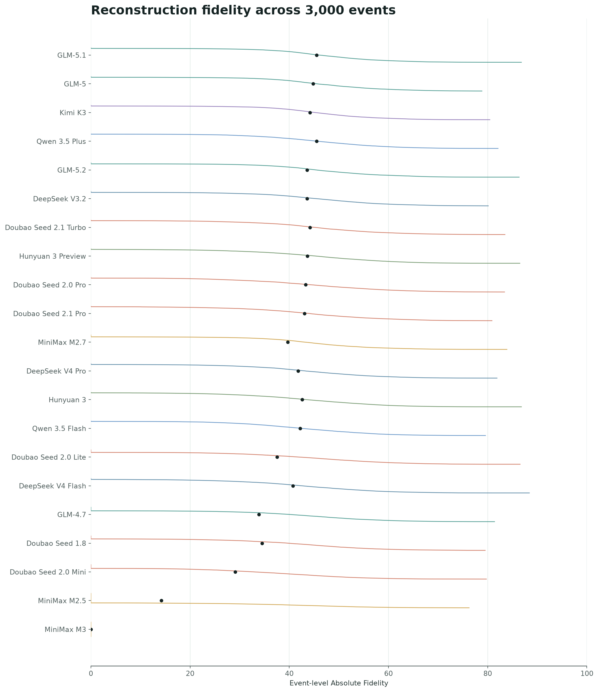
The mean fidelity profile separates source support from process reconstruction. Causal and mechanism recovery remains the most pronounced bottleneck.
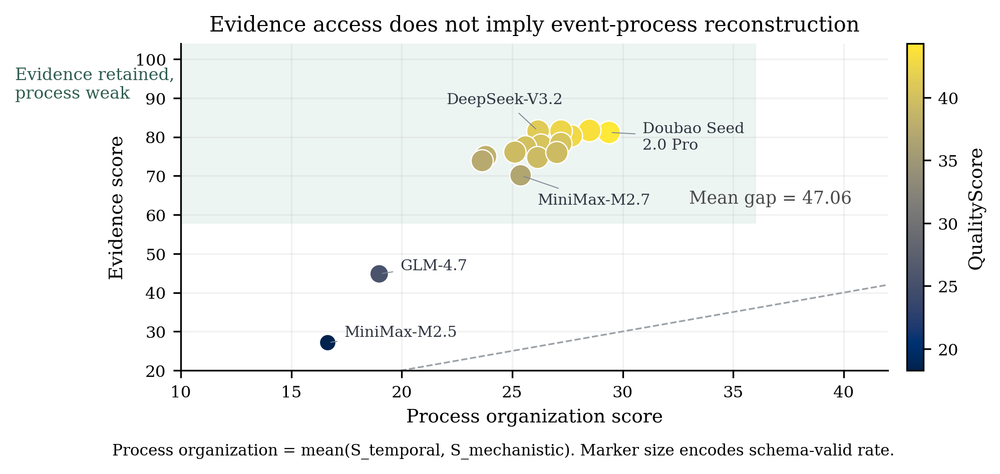
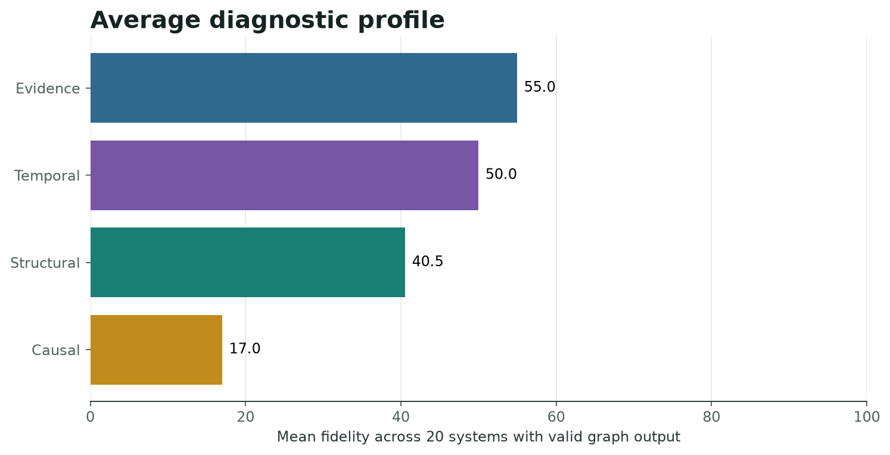
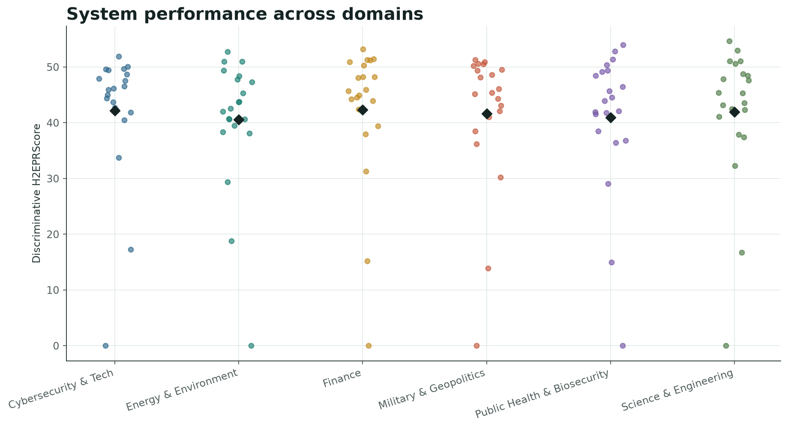
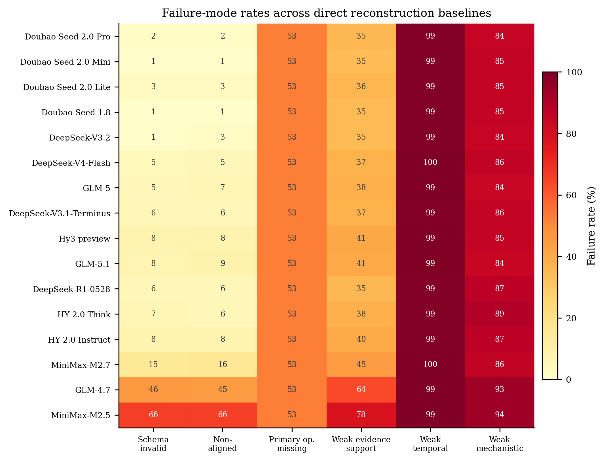
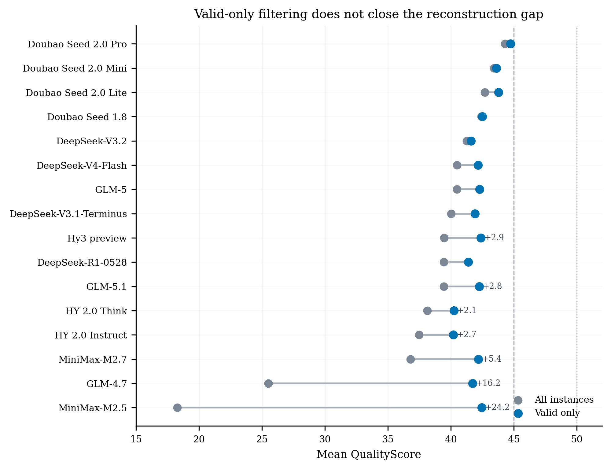
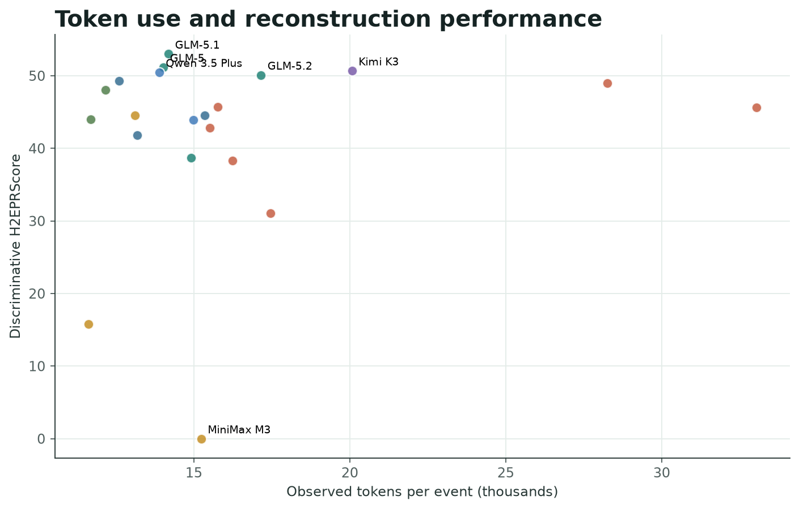
Sortable all-instance results for 21 direct reconstruction systems across 3,000 events.
| System | Valid outputs (%) | H²EPRScore | Absolute | Structure | Temporal | Causal | Evidence |
|---|---|---|---|---|---|---|---|
| Loading leaderboard data... | |||||||
@misc{h2eprbench2026,
title = {H²EPR-Bench: An Evidence-Traceable Benchmark for Event-Process Reconstruction},
author = {AgenticFinLab},
year = {2026},
note = {Forthcoming}
}